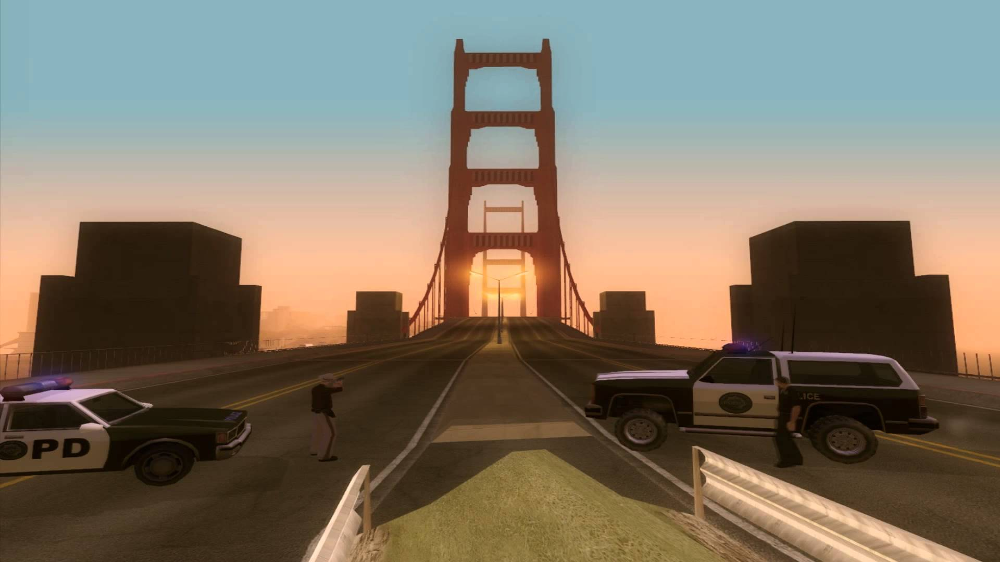
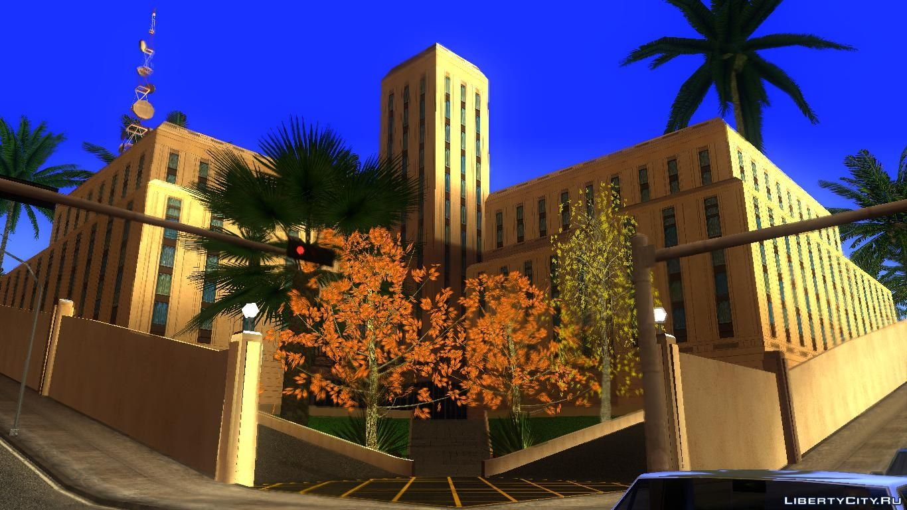

.

безкоштовна багатокористувацька модифікація для відеогри Grand Theft Auto: San Andreas у версії для Windows з закритим початковим кодом.
За основу модифікації було використано аналогічну модифікацію попередньої гри серії, Grand Theft Auto: Vice City під назвою Vice City Multiplayer, випущену у квітні 2005 року. 10 травня 2006 року вважаєтся початком цього мультіплеєра версії 0.1b . Надалі вона просто обновлювалася , з кожним роком зникали різні баги . Останньою версію на сьогодні є SA: MP 0.3.7 , яка вийшла 1 травня 2015 року
Як написано на сайті одного з самих великих проектів по онлайну : " Самп це імітація реального життя, де представлена велика кількість професій, завдань, робіт, квестів, нерухомості, автомобілів, робочої техніки, авіатранспорту.Ти можеш бути ким завгодно, починаючи з бездомнго перед тобою відкривається безліч доріг: пройти шлях від наркодилера до глави мафії, від простого солдата або поліцейського до головнокомандуючого - сенс САМП РП серверів в тому що все залежить тільки від тебе!"
На данний момент є 13 серверів від Арізони . Команда або компанія "Arizona" з'явилася у 2014 році , з того моменту почали виходити сервери і регулярні поновлюння , якщо виникне якась проблема , на серверах є адміністрація , головний в ній Головний Адмін , він є на кожном сервері , його робота провіряти форум і видавати гравцям які порушили правила сервера покарання. Також ГА ( скорочено ГоловнийАдмін ) набирає нових адміністраторів.
Тут , як і на інших проектах є економіка , кожний автомобіль , будинок , мотоцикл , аксесуар має свою ціну.
1.https://uk.wikipedia.org/wiki/San_Andreas_Multiplayer 2.https://arizona-rp.com/
2 провулок , вулиця Героїв Крут 42